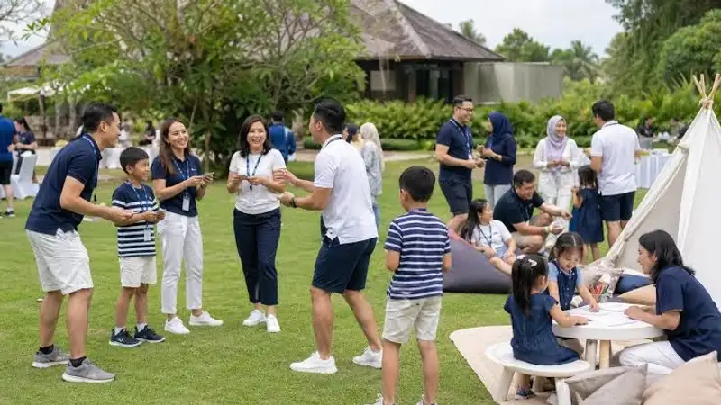

Family gathering karyawan adalah acara kebersamaan yang diselenggarakan perusahaan untuk mempertemukan karyawan beserta anggota keluarganya dalam suasana santai di luar lingkungan kerja formal. Acara ini bertujuan mempererat hubungan sosial, meningkatkan rasa memiliki terhadap perusahaan, dan menyeimbangkan kehidupan kerja karyawan.
- Family gathering karyawan menggabungkan unsur rekreasi, kebersamaan, dan penguatan budaya perusahaan.
- Acara ini melibatkan karyawan bersama pasangan dan anak-anak, berbeda dari outbound atau team building yang biasanya hanya diikuti karyawan.
- Manfaatnya mencakup peningkatan keterlibatan karyawan, penguatan loyalitas, dan citra positif perusahaan di mata keluarga karyawan.
- Perencanaan yang matang meliputi penentuan tujuan acara, pemilihan lokasi, penyusunan rangkaian aktivitas, dan pengelolaan anggaran.
- Pemilihan penyedia jasa yang tepat dan estimasi biaya yang realistis menjadi faktor penentu keberhasilan acara.
Apa Itu Family Gathering Karyawan?
Family gathering karyawan adalah kegiatan yang diselenggarakan perusahaan untuk mengumpulkan karyawan bersama keluarga inti mereka dalam satu momen kebersamaan di luar rutinitas kerja. Berbeda dengan gathering karyawan biasa yang hanya melibatkan internal tim, family gathering secara khusus mengundang pasangan dan anak-anak karyawan untuk turut merasakan suasana kerja perusahaan secara tidak langsung.
Konsep ini umumnya diadakan setahun sekali, sering kali bertepatan dengan ulang tahun perusahaan, akhir tahun, atau momen pencapaian target tertentu. Lokasi yang dipilih biasanya berupa tempat wisata, resor, atau area outbound yang memiliki ruang terbuka luas agar dapat menampung berbagai kelompok usia, mulai dari anak balita hingga orang tua karyawan.
Secara umum, family gathering karyawan berbeda dari acara perusahaan lain seperti rapat kerja tahunan atau seminar internal karena fokus utamanya bukan pada capaian bisnis, melainkan pada kualitas hubungan sosial dan emosional antara perusahaan, karyawan, dan keluarganya.
Apa Perbedaan Family Gathering dengan Outbound Perusahaan?
Family gathering melibatkan keluarga karyawan secara langsung, sementara outbound perusahaan umumnya hanya diikuti oleh karyawan itu sendiri untuk tujuan pelatihan kerja sama tim.
Outbound perusahaan lebih menekankan pada aktivitas terstruktur yang dirancang untuk melatih komunikasi, kepemimpinan, dan pemecahan masalah dalam tim kerja. Sebaliknya, family gathering menitikberatkan pada suasana santai dan menyenangkan yang dapat dinikmati bersama oleh seluruh anggota keluarga, tanpa tekanan target pelatihan tertentu. Meski demikian, kedua jenis acara ini sering digabungkan dalam satu rangkaian, misalnya sesi outbound ringan pada pagi hari yang dilanjutkan dengan family gathering pada siang harinya.
Mengapa Family Gathering Karyawan Penting bagi Perusahaan?
Family gathering karyawan penting karena membantu perusahaan membangun hubungan emosional yang lebih kuat, tidak hanya dengan karyawan, tetapi juga dengan keluarga yang menjadi bagian penting dari kehidupan karyawan sehari-hari.
Riset mengenai keterlibatan karyawan secara konsisten menunjukkan bahwa tingkat engagement karyawan secara global masih tergolong rendah. Gallup dalam laporan State of the Global Workplace melaporkan bahwa hanya sekitar dua dari sepuluh karyawan di dunia yang merasa benar-benar terlibat secara aktif dengan pekerjaannya. Kondisi ini mendorong banyak perusahaan mencari pendekatan non-formal, termasuk family gathering, sebagai salah satu cara membangun keterikatan emosional yang lebih dalam antara karyawan dan organisasi tempatnya bekerja.
Selain itu, ketika keluarga karyawan turut merasakan lingkungan kerja perusahaan secara positif, dukungan keluarga terhadap karyawan dalam menjalani pekerjaannya cenderung meningkat. Hal ini secara tidak langsung dapat berdampak pada motivasi kerja dan keseimbangan kehidupan kerja karyawan sehari-hari.
Bagaimana Family Gathering Memengaruhi Loyalitas Karyawan?
Family gathering dapat meningkatkan loyalitas karyawan karena karyawan merasa perusahaan tidak hanya memperhatikan kinerja kerja, tetapi juga kesejahteraan keluarganya secara menyeluruh.
Ketika karyawan melihat perusahaan meluangkan waktu, biaya, dan perhatian untuk keluarganya, muncul persepsi bahwa perusahaan memandang karyawan sebagai individu yang utuh, bukan sekadar sumber daya produksi. Persepsi positif semacam ini umumnya berkontribusi terhadap tingkat retensi karyawan yang lebih baik dalam jangka panjang, meskipun besarannya dapat bervariasi tergantung pada kombinasi faktor lain seperti kompensasi, jenjang karier, dan budaya kerja secara keseluruhan.
Bagaimana Cara Merencanakan Family Gathering Karyawan yang Efektif?
Perencanaan family gathering karyawan yang efektif dimulai dari penentuan tujuan acara secara jelas, dilanjutkan dengan penyusunan anggaran, pemilihan lokasi, dan penyusunan rangkaian aktivitas yang sesuai dengan komposisi peserta.
Berikut tahapan umum yang dapat diikuti perusahaan dalam merencanakan family gathering karyawan.
- Menentukan tujuan acara. Tujuan dapat berupa penguatan budaya perusahaan, apresiasi atas pencapaian tahunan, atau sekadar penyegaran suasana kerja. Tujuan ini akan memengaruhi tema, lokasi, dan jenis aktivitas yang dipilih.
- Menyusun anggaran awal. Anggaran perlu memperhitungkan jumlah peserta, termasuk anggota keluarga, serta komponen biaya seperti transportasi, konsumsi, dan aktivitas.
- Memilih lokasi dan waktu. Lokasi idealnya mudah dijangkau, memiliki fasilitas ramah anak, dan cukup luas untuk menampung berbagai kelompok usia.
- Menyusun rangkaian aktivitas. Aktivitas sebaiknya bervariasi, mulai dari permainan keluarga, hiburan, hingga waktu bebas untuk bersosialisasi.
- Berkoordinasi dengan penyedia jasa. Banyak perusahaan menggunakan jasa event organizer atau penyedia outbound untuk membantu teknis pelaksanaan di lapangan.
Faktor Apa Saja yang Perlu Dipertimbangkan dalam Memilih Lokasi?
Faktor utama dalam memilih lokasi family gathering meliputi aksesibilitas, kapasitas tempat, fasilitas ramah keluarga, dan ketersediaan area teduh atau indoor sebagai antisipasi cuaca.
Lokasi dengan akses jalan yang mudah dan area parkir memadai akan meminimalkan kendala logistik, terutama jika peserta membawa anak kecil atau anggota keluarga lanjut usia. Selain itu, ketersediaan fasilitas penunjang seperti toilet bersih, mushola, ruang menyusui, dan area bermain anak menjadi pertimbangan penting agar seluruh anggota keluarga merasa nyaman sepanjang acara berlangsung.
Wilayah dengan banyak pilihan destinasi wisata keluarga dan area outbound, seperti kawasan Batu dan Malang di Jawa Timur, sering menjadi pilihan perusahaan karena menawarkan variasi lokasi mulai dari taman wisata, resor pegunungan, hingga area outbound terbuka dalam satu wilayah yang relatif berdekatan.
Apa Saja Aktivitas yang Cocok untuk Family Gathering Karyawan?
Aktivitas yang cocok untuk family gathering karyawan umumnya mencakup permainan kelompok ringan, hiburan panggung, lomba keluarga, dan sesi kebersamaan santai seperti makan bersama atau piknik.
Beberapa jenis aktivitas yang umum dipilih antara lain lomba estafet keluarga, permainan tradisional, sesi menggambar atau mewarnai untuk anak-anak, hiburan musik, serta doorprize di akhir acara. Pemilihan aktivitas sebaiknya mempertimbangkan rentang usia peserta agar semua kelompok, baik anak-anak, remaja, maupun orang tua, dapat berpartisipasi dengan nyaman.
Sesi foto bersama dan waktu bebas untuk bersosialisasi juga penting disediakan dalam rangkaian acara, karena momen informal semacam ini sering menjadi bagian yang paling berkesan bagi peserta dibandingkan aktivitas terstruktur lainnya.
Kesalahan Umum dalam Menyelenggarakan Family Gathering Karyawan
Kesalahan umum dalam family gathering karyawan meliputi perencanaan anggaran yang kurang matang, pemilihan lokasi yang tidak ramah keluarga, dan rangkaian acara yang terlalu padat tanpa waktu istirahat.
Beberapa kesalahan yang sering terjadi antara lain tidak menyediakan aktivitas khusus untuk anak-anak, mengabaikan kebutuhan aksesibilitas bagi peserta lanjut usia, serta kurangnya koordinasi dengan penyedia jasa terkait jumlah peserta yang sebenarnya hadir. Kesalahan lain yang cukup umum adalah menyusun jadwal acara yang terlalu padat sehingga peserta tidak memiliki waktu cukup untuk beristirahat atau bersosialisasi secara santai.
FAQ
Apa itu family gathering karyawan?
Family gathering karyawan adalah acara kebersamaan yang mengundang karyawan beserta anggota keluarganya untuk berkumpul dalam suasana santai di luar lingkungan kerja formal.
Berapa lama waktu ideal untuk family gathering karyawan?
Waktu ideal umumnya berkisar satu hari penuh, meskipun beberapa perusahaan memilih format dua hari satu malam tergantung anggaran dan tujuan acara.
Apakah family gathering karyawan wajib melibatkan seluruh anggota keluarga?
Tidak wajib, keikutsertaan keluarga umumnya bersifat opsional dan disesuaikan dengan kebijakan masing-masing perusahaan.
Arya
penulis artikel yang sudah berpengalaman di dalam dunia wisata outbound Batu Malang.